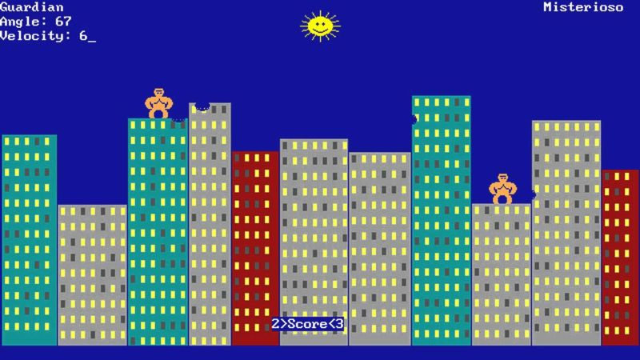

Videojuegos
17 de Agosto, 2025 - Inicios
El primer acercamiento a los videojuegos no fue precisamente por el NES, sino por las computadoras. La verdad no estoy muy seguro cual sería el primer videojuego que jugué en toda mi vida. Tal vez fue el "gorillas", en la computadora de Chepo, la que aun ni siquiera tenía monitor a color. Y aunque era muy divertido experimentar con aquellos juegos como el gorilla, nibbles e incluso el Wolfenstein 3D, para mí, no pasaba de ser una mera curiosaidad y no algo que me haya enganchado demasiado.
Me gustaba mucho ver cómo el Pollo jugaba Wolfenstein, y jugar gorillas contra el Chepo. pero fué hasta que probé el NES que me quedé maravillado con los videjuegos. no sé por qué pero los de la computadora no me daban tanto esa sensación mágica y super genial que sí me transmitía el NES. Tal vez porque las computadoras ya eran para mí algo super sorprendente y no esperaba menos de ellas, mientas que el NES fue algo un poco distinto, ya que al conectarlo a la tele y ver los juegos a color, y juegos tan diferentes a los de la computadora, fue grandioso.

← Volver a Historias